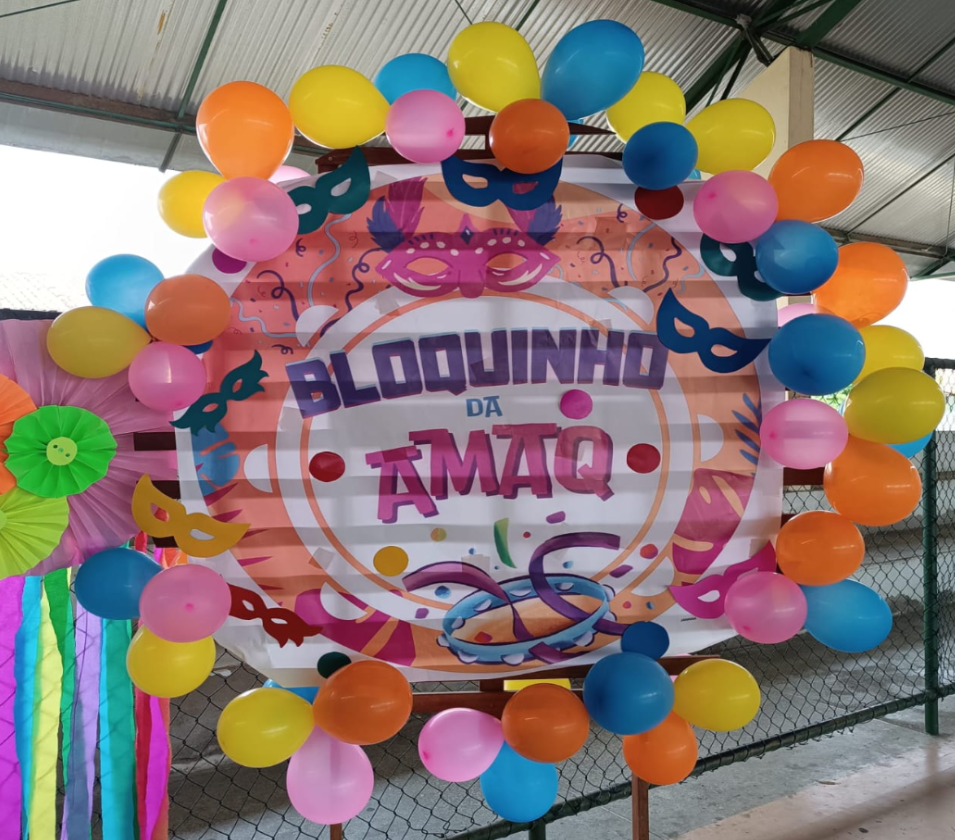
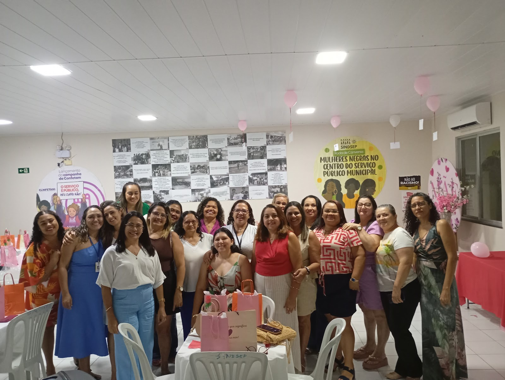
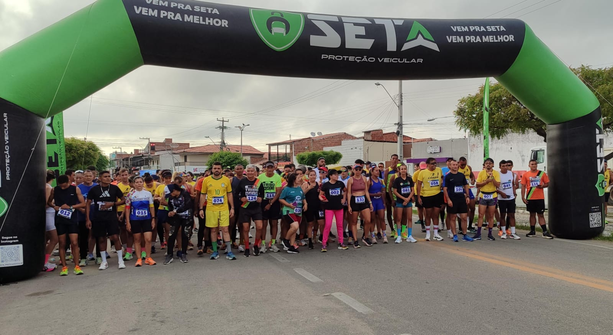
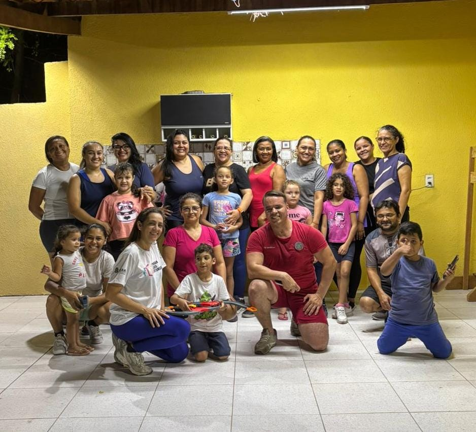
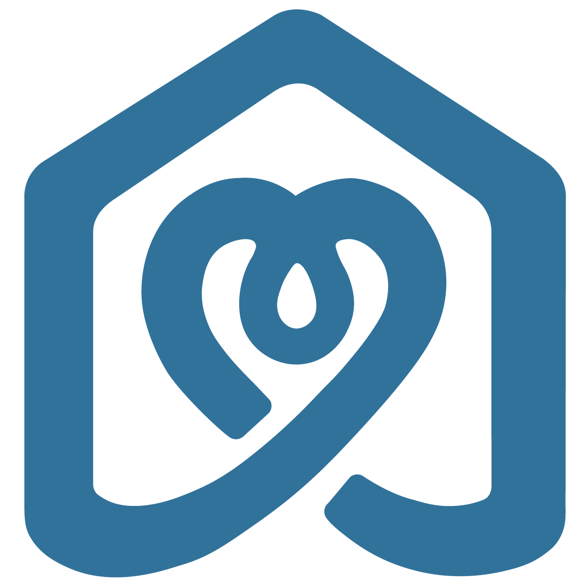
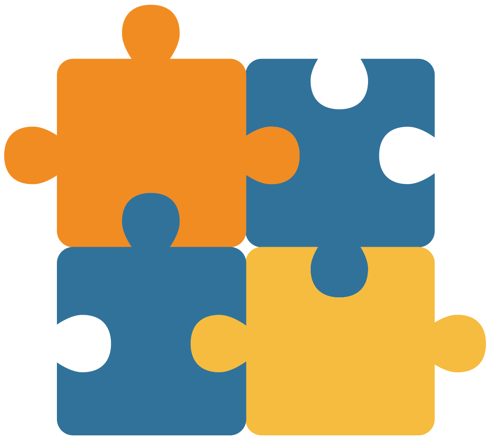

Quem Somos
Fundada com o objetivo de promover o apoio, a inclusão e a defesa dos direitos das pessoas com Transtorno do Espectro Autista (TEA) e outras deficiências, a AMAQ atua de forma ativa no combate ao preconceito, na promoção da cidadania e na construção de uma sociedade mais justa e inclusiva.
Entre seus objetivos estão o apoio psicológico às famílias, a articulação com instituições, a promoção de ações sociais e a implantação de um centro de atendimento multidisciplinar. Conheça mais sobre a AMAQ e descubra como nossas ações impactam vidas, fortalecem famílias e contribuem para a construção de uma sociedade mais inclusiva.
Nossos Eventos
Desenvolvemos ações contínuas de conscientização por meio de palestras, campanhas educativas e eventos comunitários, promovendo inclusão e respeito. Para fortalecer essas iniciativas, contamos com padrinhos que apoiam nossos eventos e contribuem diretamente para sua realização e alcance, ampliando seu impacto social. Seja padrinho e faça parte dessa transformação.

Bloquinho da AMAQ

Dia das Mães

1°Corrida e Conscientização do Autismo

Projetos Bombeiros
Contribua com a AMAQ
Desenvolvemos ações que só se tornam possíveis com o apoio de pessoas e parceiros que acreditam na inclusão. Cada contribuição fortalece atendimentos, viabiliza eventos de conscientização e amplia o alcance de projetos voltados às pessoas com Transtorno do Espectro Autista (TEA) e outras deficiências, impactando diretamente famílias e a comunidade.
Ao contribuir com a AMAQ, você participa ativamente da construção de um futuro mais acessível e empático. Recebemos apoio por meio de parcerias, da atuação de profissionais, de benfeitores, de associados e de doações financeiras, e cada forma de colaboração nos permite continuar desenvolvendo iniciativas que promovem respeito, cuidado e inclusão social.

Seja Profissional Parceiro
Acreditamos na força da união e da colaboração. Por isso, mantemos parcerias com profissionais e contamos com o apoio de voluntários comprometidos com a causa da inclusão, que atuam no desenvolvimento de ações, atendimentos e iniciativas voltadas às pessoas com deficiência e suas famílias.
Médicos
Atuam na avaliação clínica, acompanhamento da saúde e orientação das famílias, contribuindo para um cuidado integral.

Psicólogos
Oferecem apoio emocional e acompanhamento psicológico, auxiliando no desenvolvimento, no bem-estar e no fortalecimento das famílias.

Psicopedagogos
Apoiam os processos de aprendizagem, identificando necessidades e desenvolvendo estratégias que favorecem o desenvolvimento educacional.

Fonoaudiólogos
Trabalham o desenvolvimento da comunicação, da linguagem e da interação social, respeitando as particularidades de cada pessoa.

Nossos Parceiros
Contamos com o apoio de parceiros e colaboradores para ampliar nosso alcance, garantir a continuidade de nossas ações e tornar eventos e projetos ainda mais significativos. Essa colaboração fortalece nossa missão de acolher, apoiar e promover a inclusão social, gerando impacto positivo para as pessoas atendidas e para a comunidade.
